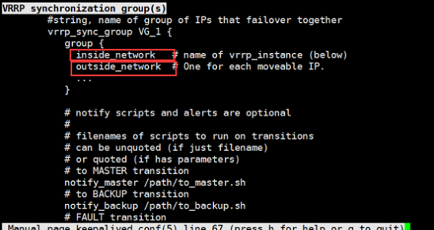

一：keepalive简述
一;高可用的解决方案
1）vrrp协议的实现
keepalive
2）ais：完备HA集群
RHCS（cman）
heartbeat
corosync
二：vrrp协议：
概念：在节点（主机）出现故障时，实现ip地址的切换。
keepalive就是基于此协议而实现高可用的。
Failover：故障切换，即某资源的主节点故障时，将资源转移至其它节点的操作；
Failback：故障移回，即某资源的主节点故障后重新修改上线后，将转移至其它节点的资源重新切回的过程；
术语：
虚拟路由器：Virtual Router
对应与配置文件中/etc/keepalived中的virtual_ipaddress
生产中一个director主机上通常会有多个网卡，对外为vip1，接收用户请求，对内为vip2，将用户的请求通过vip2发送给后端提供服务的主机RS。在配置虚拟路由ip时。vip1与vip2需要配置在一个组内，实现在master主机出现故障时，vip1转向backup备用主机时，vip2也同时转向backup备用主机。不然vip2还停留在master主机上，转向后端主机的请求将会无法到达。
此块在配置文件中
虚拟路由器标识：VRID(0-255)
物理路由器：
master：主设备
backup：备用设备
priority：优先级
VIP：Virtual IP，虚拟ip
VMAC：Virutal MAC (00-00-5e-00-01-VRID)
GraciousARP
通告：心跳，优先级等；周期性；
抢占式，非抢占式；
安全工作：
认证：
无认证
简单字符认证
MD5
三：keepalived:
1：简述
vrrp协议的软件实现，原生设计的目的为了高可用ipvs服务：
基于vrrp协议完成地址流动；
为集群内的所有节点生成ipvs规则（在配置文件中预先定义）；
为ipvs集群的各RS做健康状态检测；
基于脚本调用接口通过执行脚本完成脚本中定义的功能，进而影响集群事务；
组件：
核心组件：
vrrp stack vrrp协议的实现
ipvs wrapper为集群内的所有节点生成ipvs规则
checkers 为ipvs集群的各RS做健康状态检测
控制组件：
配置文件分析器
IO复用器
内存管理组件
虚拟路由器的工作模型：
单主：
双主
通知机制：
notify_master
notify_backup
notify_fault
2：安装
yum install keepalived
程序环境：主配置文件：/etc/keepalived/keepalived.conf
主程序文件：/usr/sbin/keepalived
Unit File：keepalived.service
Unit File的环境配置文件：/etc/sysconfig/keepalived
3：配置文件
/etc/keepalived/keepalived.conf
配置文件组件部分：
TOP HIERACHY
GLOBAL CONFIGURATION
Global definitions
Static routes/addresses
VRRPD CONFIGURATION
VRRP synchronization group(s)：vrrp同步组；
VRRP instance(s)：每个vrrp instance即一个vrrp路由器；
LVS CONFIGURATION
Virtual server group(s)
Virtual server(s)：ipvs集群的vs和rs；
4：man keepalived.conf
可以查看配置文件的具体使用细则
第一个配置段：GLOBAL CONFIGURATION
第二配置段：VRRPD CONFIGURATION
此地址段为配置keepalived的核心配置段。主要包括两块内容
VRRP instance(s)：vrrp实例
一个vrrp instance 就是一个vrrp路由器
VRRP synchronization group(s)：虚拟路由器同步组
一个主机生产中一般需要配置两个以上的虚拟路由器。此配置可以实现将多个虚拟路由器编制在一个组内，可以实现，当一个虚拟路由器偏移至另一台主机时，其余的虚拟路由器（vip）也同时偏移至另一台主机上。
inside_network # name of vrrp_instance (below) 内网网络
outside_network # One for each moveable IP. 外网网络

第三段：LVS CONFIGURATION
高可用LVS时使用。若使用Nginx时不用关注此块
四：配置语法：
配置虚拟路由器：
vrrp_instance <STRING> {
....
}
专用参数：
state MASTER|BACKUP：当前节点在此虚拟路由器上的初始状态；只能有一个是MASTER，余下的都应该为BACKUP；
interface IFACE_NAME：绑定为当前虚拟路由器使用的物理接口；
virtual_router_id VRID：当前虚拟路由器的惟一标识，范围是0-255；
priority 100：当前主机在此虚拟路径器中的优先级；范围1-254；
advert_int 1：vrrp通告的时间间隔；
authentication {
auth_type AH|PASS
auth_pass <PASSWORD>
}
virtual_ipaddress {
<IPADDR>/<MASK> brd <IPADDR> dev <STRING> scope <SCOPE> label <LABEL>
192.168.200.17/24 dev eth1
192.168.200.18/24 dev eth2 label eth2:1
}
track_interface {
eth0
eth1
...
}
配置要监控的网络接口，一旦接口出现故障，则转为FAULT状态；
nopreempt：定义工作模式为非抢占模式；
preempt_delay 300：抢占式模式下，节点上线后触发新选举操作的延迟时长；
定义通知脚本：
notify_master <STRING>|<QUOTED-STRING>：当前节点成为主节点时触发的脚本
notify_backup <STRING>|<QUOTED-STRING>：当前节点转为备节点时触发的脚本；
notify_fault <STRING>|<QUOTED-STRING>：当前节点转为“失败”状态时触发的脚本；
notify <STRING>|<QUOTED-STRING>：通用格式的通知触发机制，一个脚本可完成以上三种状态的转换时的通知；
五：通知机制
通知机制：
notify_master：to be master时，调用指定的脚本完成辅助操作，，以“通知”为核心目标
notify_backup to be backup时，调用指定的脚本完成辅助操作，，以“通知”为核心目标
notify_fault
通知脚本的使用方式：
示例通知脚本：
#!/bin/bash
#
contact='root@localhost'
notify() {
local mailsubject="$(hostname) to be $1, vip floating"
local mailbody="$(date +'%F %T'): vrrp transition, $(hostname) changed to be $1"
echo "$mailbody" | mail -s "$mailsubject" $contact
}
case $1 in
master)
notify master
;;
backup)
notify backup
;;
fault)
notify fault
;;
*)
echo "Usage: $(basename $0) {master|backup|fault}"
exit 1
;;
esac
脚本的调用方法：
notify_master "/etc/keepalived/notify.sh master"
notify_backup "/etc/keepalived/notify.sh backup"
notify_fault "/etc/keepalived/notify.sh fault"
六：D类地址
D类IP地址第一个字节以“1110”开始 。它并不指向特定的网络，目前这一类地址被用在多点广播（Multicast）中。多点广播地址用来一次寻址一组计算机，它标识共享同一协议的一组计算机。
D类地址又分为三种类型：即专用地址、公用地址和私用地址；其中专用地址（224.0.0.0-224.0.0.255）用于网络协议组的广播，公用地址（224.0.1.0-238.255.255.255）用于其它组播，私用地址（239.0.0.0-239.255.255.255）用于测试。
在keepdlived的配置文件中
vrrp_mcast_group4 224.24.24.18
此地址用于向共同使用vrrp协议的主机 不断的广播自身的ip地址，及优先级。优先级高的主机将会使用vip
在现实中，会使用一根网线将 此两台主机直接绑定在一起，实现此类功能
二：实现
一：配置前提
HA Cluster的配置前提：
(1) 各节点时间必须同步；
ntp, chrony
(2) 确保iptables及selinux不会成为阻碍；
(3) 各节点之间可通过主机名互相通信（对KA并非必须）；
建议使用/etc/hosts文件实现；
(4) 确保各节点的用于集群服务的接口支持MULTICAST通信；
D类：224-239；
二：实验前奏
keepalive天生是用来高可用LVS的。借助服务脚本接口可以实现高可用nginx和haproxy
第一步：单主模型
vrrp的地址转移实现。单主模式。一个虚拟路由vip
第二步：双主模型
实现双主节点，每一个节点都可以工作起来。双虚拟路由ip
第三步：高可用LVS
在单主模式下。增加后端的具体服务。实现节点切换时，服务仍然可用。
后端的服务为两台主机，
第四步：增加check。检查后端主机的健康状况。
在后端主机全部down掉的情况之下，增加sorry server.用keepalive主机实现
第五步：高可用haproxy
keepalive主机不再使用LVS（director）。使用nginx或者haproxy
三：keepalive 单主模式
环境：172.16.253.95 做master
172.16.253.96 做backup
1：解读配置文件
再解读/etc/keepalived/keepalived.conf
全局配置
global_defs {
notification_email {
haha@mashuai.com //出问题时，接收邮件的地址
}
notification_email_from admin@mashuai.com //邮件发件人地址
smtp_server 127.0.0.1 //邮件服务器地址
smtp_connect_timeout 30 //连接超时时间
router_id n2 //虚拟路由服务器地址（建议写上主机名）
vrrp_mcast_group4 224.24.24.18 //多播地址段，默认为224.0.0.18.做实验时需要更改
}vrrp_instance vrrp实例段，核心配置段
vrrp_instance VI_1 { //虚拟路由器的名称，多个时，名称要不一样
state MASTER //虚拟路由器的状态，master|backup
interface eth0 //通过哪个网口发送vrrp广播
virtual_router_id 01 //虚拟路由器的id，要与同一台主机上的其他虚拟路由器id 区分开来
priority 100 //物理路由器在此虚拟路由器上的优先级
advert_int 1 //每隔多长时间 广播一次自己的优先级
authentication { //传递信息的认证方式，密码仅支持8位
auth_type PASS
auth_pass 1111
}
virtual_ipaddress { //虚拟路由的ip地址
172.16.253.100}
}
2：更改配置文件
95主机的配置文件
注意：绿色字体为与96主机不一样的地方。
其他的配置文件内容统统都注释掉
global_defs {
notification_email {
haha@mashuai.com
}
notification_email_from Alexandre.Cassen@firewall.loc
smtp_server 127.0.0.1
smtp_connect_timeout 30
router_id LVS_DEVEL
vrrp_mcast_group4 224.24.24.18
}vrrp_instance VI_1 {
state MASTER
interface eth0
virtual_router_id 01
priority 100
advert_int 1
authentication {
auth_type PASS
auth_pass 1111
}
virtual_ipaddress {
172.16.253.100}
}
96主机的配置文件
global_defs {
notification_email {
haha@mashuai.com
}
notification_email_from Alexandre.Cassen@firewall.loc
smtp_server 127.0.0.1
smtp_connect_timeout 30
router_id n2
vrrp_mcast_group4 224.24.24.18
}vrrp_instance VI_1 {
state BACKUP
interface eth0
virtual_router_id 01
priority 95
advert_int 1
authentication {
auth_type PASS
auth_pass 1111
}
virtual_ipaddress {
172.16.253.100}
}
3：重启keepalived服务
95主机 master：
systemctl restart keepalived.service
systemctl status keepalived.service

ip a：虚拟路由器主机ip已经添加进来

tcpdump -nn -i eth0 host 224.24.24.18
172.16.253.95 主机通过224.24.24.18向外发送vrrp广播，vrid为1 优先级为100，字节长度为20，简单认证方式，每隔1秒发送一次

96主机：backup
systemctl restart keepalived.service
systemctl status keepalived.service

4：模拟vip偏移至 96主机
95 主机 stop keepalived服务
systemctl stop keepalived.service
在96主机上 vip已经偏移至96主机

再次在 95 主机重启 keepalived服务 VIP则将重新偏移至95主机
默认vrrp工作于抢占 模式。谁的级别高，vip偏移至哪台主机上


四: 双主模式
简述：配置两个虚拟路由器
下图为框架：
环境：先stop 95 96两台主机的keepalived服务
1：编辑配置文件
95主机增加如下代码：
vrrp_instance VI_2 {
state BACKUP
interface eth0
virtual_router_id 02
priority 95
advert_int 1
authentication {
auth_type PASS
auth_pass 2222
}
virtual_ipaddress {
172.16.253.200}
}
96主机：
增加如下代码，相当于增加了另一组虚拟路由器vip2 172.16.253.200
vrrp_instance VI_2 {
state MASTER
interface eth0
virtual_router_id 02
priority 100
advert_int 1
authentication {
auth_type PASS
auth_pass 2222
}
virtual_ipaddress {
172.16.253.200}
}
2：启动96主机服务
96主机：先关闭服务，再启动服务。
[root@hkeepalived]#systemctl stop keepalived
[root@hkeepalived]#systemctl start keepalived
[root@hkeepalived]#systemctl status keepalived
两个 vip都添加至 eth0 网卡了


3：启动95主机服务
[root@hkeepalived]#systemctl stop keepalived
[root@hkeepalived]#systemctl start keepalived
[root@hkeepalived]#systemctl status keepalived

启动95 主机服务之后 100地址的vip回至95主机。因为172.16.253.100的vip在95主机的优先级要比在96主机上高
五：调用通知机制
目的:演示通知机制中
notify_master
notify_bacup 是如何工作
1：95 96主机
编辑通知机制的脚本放置在/etc/keepalived下
vim notify.sh
!/bin/bash
contact='root@localhost'
notify() {
local mailsubject="$(hostname) to be $1, vip floating"
local mailbody="$(date +'%F %T'): vrrp transition, $(hostname) changed to be $1"
echo "$mailbody" | mail -s "$mailsubject" $contact
}
case $1 in
master)
notify master
;;
backup)
notify backup
;;
fault)
notify fault
;;
*)
echo "Usage: $(basename $0) {master|backup|fault}"
exit 1
;;
esac
2 :95 96 主机的配置文件恢复至单主模式
删除 实验四中 增加的配置文件内容
3：编辑配置文件
95 96 主机中 在vrrp_instance中增加如下代码
notify_master "/etc/keepalived/notify.sh master"
notify_backup "/etc/keepalived/notify.sh backup"
notify_fault "/etc/keepalived/notify.sh fault"

4：启动服务
启动96主机的服务：
查看邮件有无发送：
mail启动95主机的服务：
96主机将收到 变为 backup 的邮件
六：LVS-DR模式--keepalive
环境：
95主机 LVS
96主机 LVS
97 98 主机RS
1:97 98 主机 安装nginx
yum install nginx –y
编辑主页文件：
97：vim /usr/share/nginx/html/index.html
<h1> RS1111111111111</h1>
98：vim /usr/share/nginx/html/index.html
<h1> RS22222222222</h1>
2：后端主机 内核参数修改
97 98主机编辑脚本
1：
后端主机内核参数的修改 及 vip的添加
编辑脚本，实现对内核参数的修改
vim /root/set.sh
#!/bin/bash
vip=172.16.0.199
mask=255.255.255.255
iface="lo:0"
case $1 in
start)
echo 1 > /proc/sys/net/ipv4/conf/all/arp_ignore
echo 2 > /proc/sys/net/ipv4/conf/all/arp_announce
echo 1 > /proc/sys/net/ipv4/conf/lo/arp_ignore
echo 2 > /proc/sys/net/ipv4/conf/lo/arp_announce
ifconfig $iface $vip netmask $mask broadcast $vip up
route add -host $vip dev $iface
;;
stop)
ifconfig $iface down
echo 0 > /proc/sys/net/ipv4/conf/all/arp_ignore
echo 0 > /proc/sys/net/ipv4/conf/all/arp_announce
echo 0 > /proc/sys/net/ipv4/conf/lo/arp_ignore
echo 0 > /proc/sys/net/ipv4/conf/lo/arp_announce
;;
*)
echo "start|stop"
exit 1
；；
esac
2：测试脚本实现
bash –x set.sh start
ip a
查看 lo的ip有无添加进来
3：lvs主机95 配置服务
1 安装ipvsadm
2 添加vip至eth0
ifconfig eth0:0 172.16.253.199 netmask 255.255.255.255 broadcast 172.16.253.199 up
3：配置LVS-NAT 服务
[root@h~]#ipvsadm -A -t 172.16.253.199:80 -s rr
[root@h~]#ipvsadm -a -t 172.16.253.199:80 -r 172.16.253.97:80 -g
[root@h~]#ipvsadm -a -t 172.16.253.199:80 -r 172.16.253.98:80 -g
[root@h~]#ipvsadm -L –n


5 down掉 95主机 lvs
在96主机上部署lvs
95主机
ipvsadm –C
ifdown eth0:0
96主机
重复步骤3 即可
1 安装ipvsadm
2 添加vip至eth0
ifconfig eth0:0 172.16.253.199 netmask 255.255.255.255 broadcast 172.16.253.199 up
3：配置LVS-NAT 服务
[root@h~]#ipvsadm -A -t 172.16.253.199:80 -s rr
[root@h~]#ipvsadm -a -t 172.16.253.199:80 -r 172.16.253.97:80 -g
[root@h~]#ipvsadm -a -t 172.16.253.199:80 -r 172.16.253.98:80 -g
[root@h~]#ipvsadm -L –n
4 测试 DR模式正常与否
5 测试ok后
96主机上清空所有规则
ipvsadm –C
ifconfig eth0:0 down
6：实现LVS
以下代码是 实现 LVS 调度
95 96 主机 keepalived.conf配置文件中加入如下代码
virtual_server 172.16.253.199 80 {
delay_loop 6
lb_algo rr
lb_kind DR
protocol TCP
real_server 172.16.253.98 80{
weight 1
HTTP_GET {
url {
path /
status_code 200
}
}
connect_timeout 2
nb_get_retry 3
delay_before_retry 1
}
real_server 172.16.253.97 80{
weight 1
HTTP_GET {
url {
path /
status_code 200
}
}
connect_timeout 2
nb_get_retry 3
delay_before_retry 1
}
}
重启 keepalived服务
测试：

7 重启 95主机的keepalived服务
95主机的 优先级比96的高
vip会偏移至95主机
96主机

95主机

8检测健康状况功能 有无实现
给98主机增加iptables规则 ：所有tcp的访问禁止掉
iptables –A INPUT –p tcp –dport 80 –j REJECT

9：增加sorry server
在 95 96主机上增加soory server 内容
当 后端 9798主机的全部宕机之后。95 96提供sorry server页面服务
95 96主机
1：安装nginx 提供sorry页面
vim /usr/share/nginx/html/index.html
2:更改配置文件 keepalived.conf
在 virtual_server中
增加一行代码 sorry_server 127.0.0.1 80
重启keepalived服务
[root@hkeepalived]#systemctl stop keepalived
[root@hkeepalived]#systemctl start keepalived
down掉 后端主机 9798 nginx服务
测试访问：
三：高可用服务
一：理论描述
目的：
借助脚本实现 高可用服务(ninx/http/haproxy)
也就是说在服务不可用时，vip偏移至备用节点。而不是之前实现的主机down掉之后vip偏移至备用节点。
环境：
95 96主机。keepalived 服务stop
脚本例子：
1：rpm –ql keepalived
此文件内有脚本的例子，以及如何调用
/usr/share/doc/keepalived-1.2.13/samples/keepalived.conf.vrrp.localcheck
2：cat /usr/share/doc/keepalived-1.2.13/samples/keepalived.conf.vrrp.localcheck

3：脚本简述
1:在配置文件中定义脚本
vrrp_script chk_sshd {
script "killall -0 sshd" # cheaper than pidof
interval 2 # check every 2 seconds
weight -4 # default prio: -4 if KO
fall 2 # require 2 failures for KO
rise 2 # require 2 successes for OK
}
调用脚本 使用 vrrp_script 关键词
脚本名 chk_sshd
脚本内容分为两块
1 script "killall -0 sshd"
表示 此段代码 返回0值，部分功能不变
返回非0值。要执行一些关键指令
killall -0 sshd ：测试 是否可以杀掉 sshd进程。能杀掉返回0值，表示sshd服务
正常运行。返回其他值，表示sshd服务没有运行正常。
2：weight -4 测试失败权重-4
fall 2 检测失败2次，才减去权重
rise -2 检查两次成功，ok
2：在配置文件中调用脚本
在 vrrp_instance中
使用track_script {
chk_haproxy weight 2
chk_http_port
chk_https_port
chk_smtp_port
}
此种模式调用脚本
二：nginx 服务 高可用
1：先定义脚本，再调用脚本
95 96主机同时更改配置文件
编辑keepalived.conf文件
1）增加脚本
2）调用脚本
1)编辑脚本
vim /etc/keepalived.conf
vrrp_script chk_nginx{
script "[[ -f /etc/keepalived/down ]] && exit 1 ||exit 0 "
interval 1
weight -10
fall 2
rise 1
}script "[[ -f /etc/keepalived/down ]] && echo 1 ||echo 0 "
down文件存在 返回1
down文件不存在 返回0
依靠down文件存在与否 来降低/保持 主节点的权重
2）调用脚本
track_script {
chk_nginx
}
使用 track_script 关键词 调用脚本

2：测试
在95主机上 touch /etc/keepalived/down文件
vip偏移至96主机
3：编辑 nginx配置文件
server上增加
upstream websrvs {
server 172.16.253.97:80;
server 172.16.253.98:80;
}此段主要实现 nginx的 服务调度至后端服务器
4：测试web主页访问

三：双主模型nginx 高可用集群
上接实验三：
1：编辑配置文件
增加 vrrp_instance 实例2
96主机 在vip2上为MASTER
95主机在 vip2上为BACKUP
96主机增加如下内容：
vrrp_instance VI_2 {
state MASTER
interface eth0
virtual_router_id 61
priority 100
advert_int 1
authentication {
auth_type PASS
auth_pass 1111
}
virtual_ipaddress {
172.16.253.188
}
track_script {
chk_nginx
}
}

95主机增加如下内容：
vrrp_instance VI_2 {
state BACKUP
interface eth0
virtual_router_id 61
priority 95
advert_int 1
authentication {
auth_type PASS
auth_pass 1111
}
virtual_ipaddress {
172.16.253.188
}
track_script {
chk_nginx
chk_nn

}
### 2: 测试双主模式
95主机 关闭—启动服务
96主机关闭服务
1）vip1 及vip2 都在 95主机上

2）启动96 主机上的keepalived 服务
vip2 跳转至 96主机上

3） 在95 主机上 建 /etc/keepalived/down文件
vip1 199也跳转至 96主机上

4） 客户端测试访问

3：改变 nginx的调度算法

2 hash算法
hash $request_uri consistent
hash $remote_addr
hash $cookie_name
ip_hash 改为 hash $request_uri consistent

}